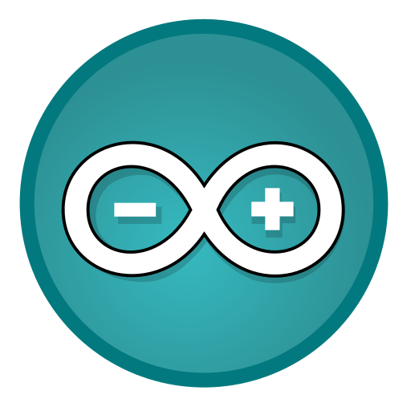
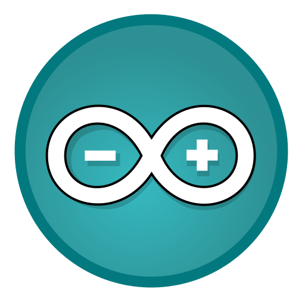
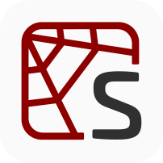
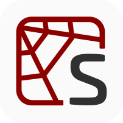
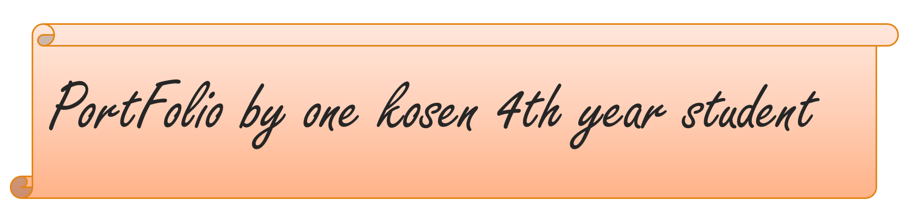
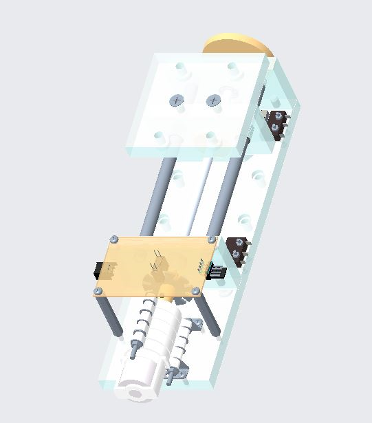
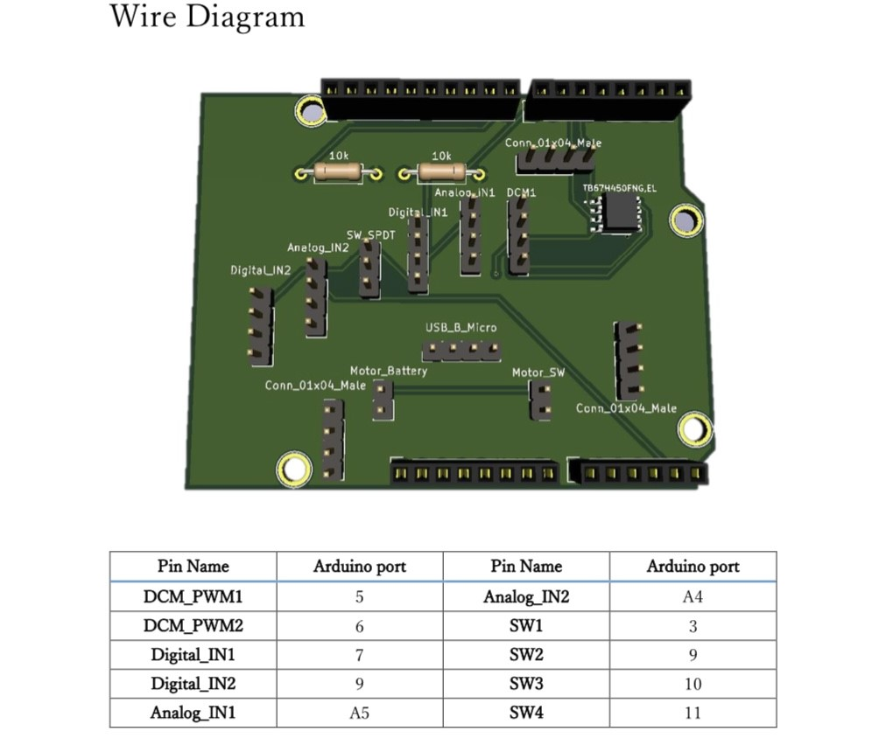
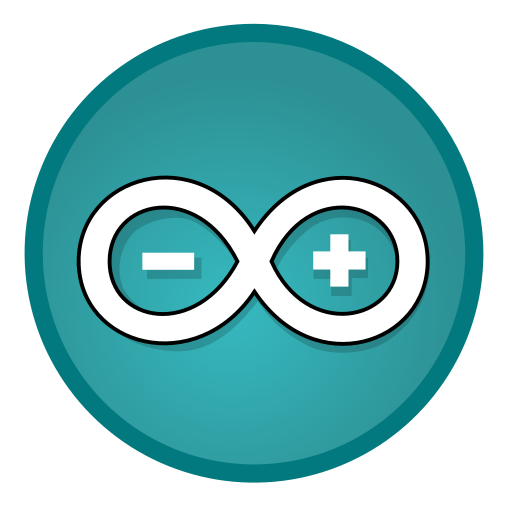
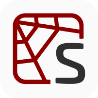
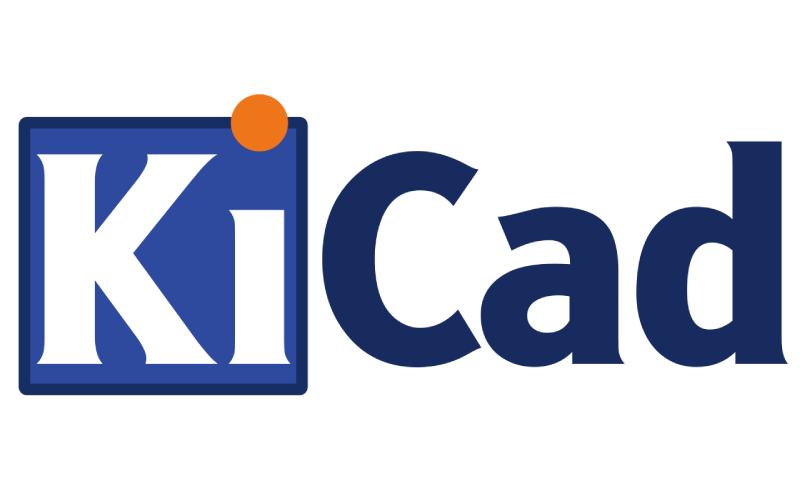

 


3年生のCreo parametric、KiCadを用いた授業の際の課題で、送り装置のCAD図とロボットのモーター制御用回路です。
 
3年生の高専祭の際に複数人と協力し、ラジコンを用いて2分間でLEDを点灯させることで陣地を取り合うゲームを製作しました。私は回路やステージの組み立て、プログラムの作成等の作業を行いました。
高専4年生の前期の半年を通して、授業及び放課後を活用してロボット製作を行いました
製作の目的はロボットを活用した回転寿司屋のDX化でした
チームの人数は4人で、私は全体の回路設計・実装と、寿司の廃棄・提供を行う機械の設計・製作を担当しました。
授業で経験したもの 旋盤、3Dプリンター
自主経験を伴ったもの 卓上ボール盤、レーザーカッター
授業で経験したもの
python, arduino言語, C言語, html, css, spyder


自主経験を伴ったもの
KiCad, creo parametric
